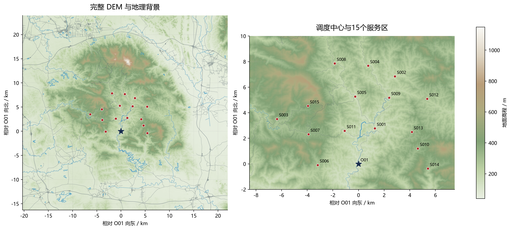
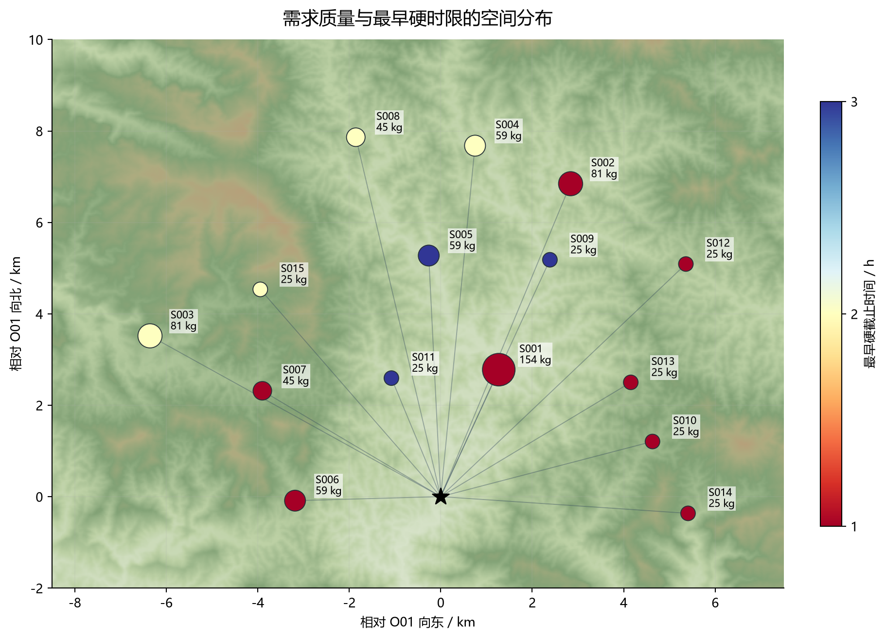
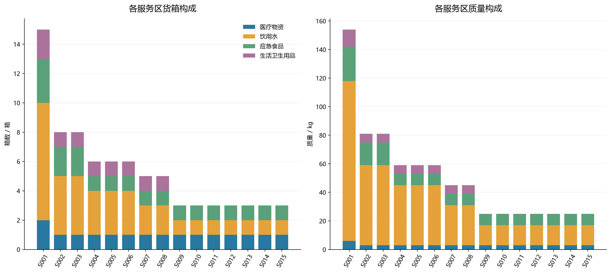
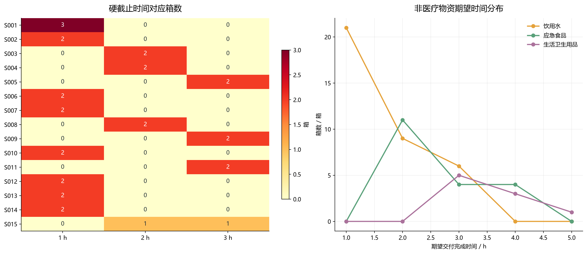
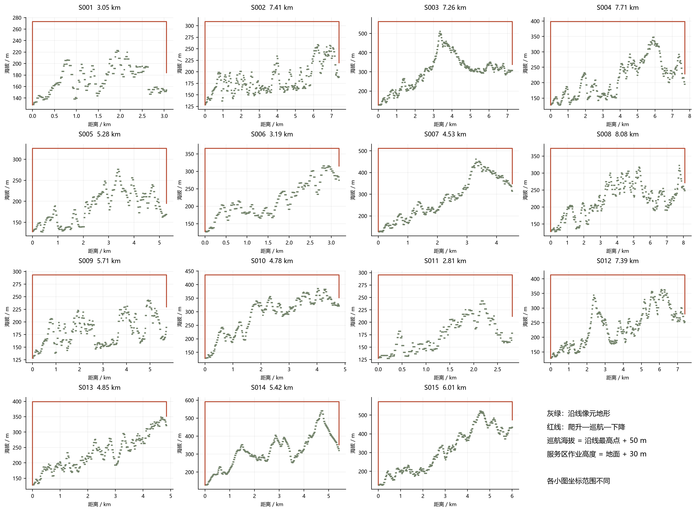
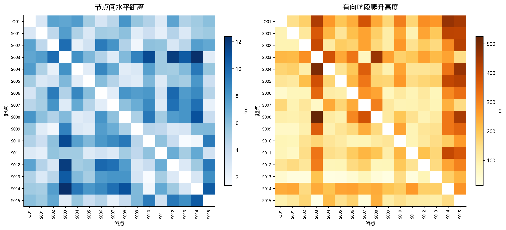
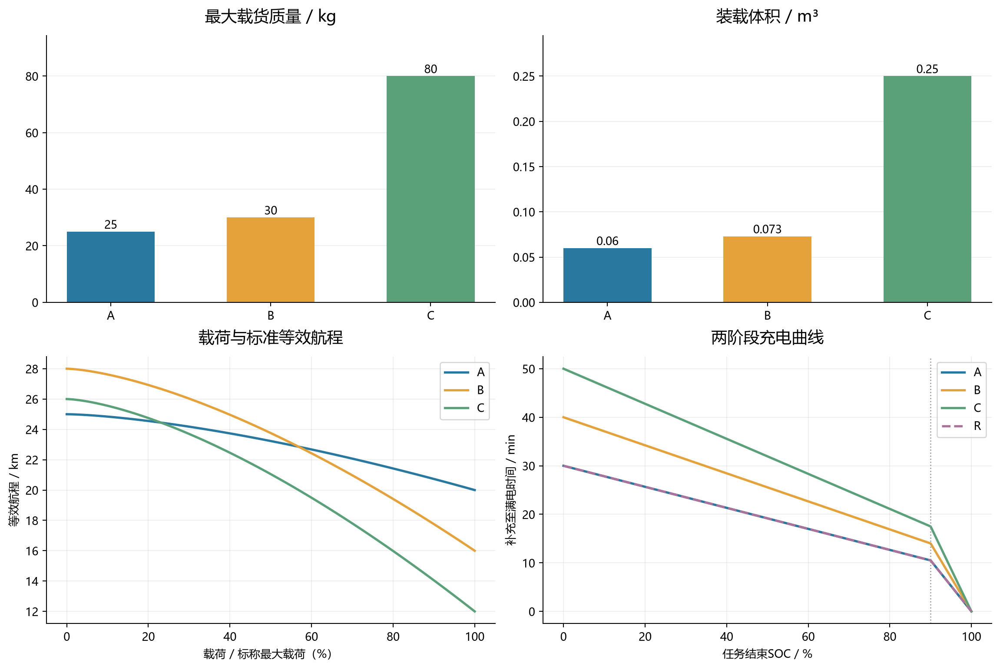
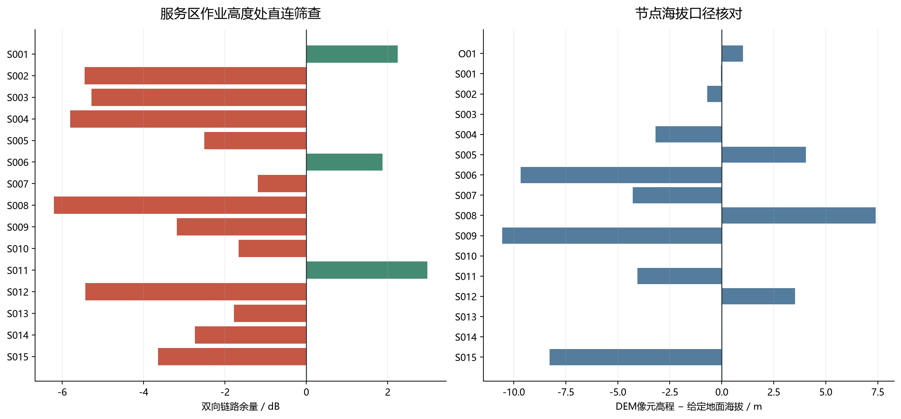

地形与任务节点

道路与水系为原始地理背景，不代表灾后通行状态。星号为O01，红点为服务区。
需求与时限空间分布

圆面积随需求质量增加；连线为单点分析航段，不是优化调度结果。
物资需求构成

质量与箱数使用各自单位；不按保障人口扩充或缩减附件需求。
硬时限与期望时限

首批非医疗物资仍受首批硬截止约束；右图仅展示其期望时间字段，不能据此取消首批要求。
15条中心直达航段地形剖面

按穿越像元计算最高地形，纵向红线表示爬升和下降；图示为单点分析，不是优化路线。
距离与爬升矩阵

主对角线不代表真实自环任务；爬升矩阵通常不对称，反向爬升等于正向下降。
机型能力与充电周转

等效航程不包含本场景具体爬升和安全余量，不能直接当作可执行往返距离；A与R充电曲线重合。
通信初筛与高程一致性

直连筛查仅针对服务区离地30米静态位置，不能证明整段飞行连续通信；红色为静态直连不可用。
计算口径与边界
- 原始附件只读。删除的仅为表格空白行、标题行和分节表头；不删除异常记录、不填补人为需求、不改变原始编号。
- 标准单位为m、s、kg、m³、kWh、dB。返航电量百分数转换为0至1比例，源文件和源行号保存在标准表。
- 非首批货箱的首批时限为空，含义是不适用；没有硬截止的货箱hard_deadline_s为空，不得填0。所有货箱均保留expected_s。
- 医疗物资expected_s是硬约束，首批first_deadline_s也是硬约束，hard_deadline_s取两者适用最小值。
- DEM读取GeoTIFF的PixelIsPoint标记，tiepoint为像元中心；NoData=-32767转NaN，绝不当0高程。MAT仅用于校验数据一致性。
- 节点作业高度以节点表给定海拔为准，O01加0m，服务区加30m；DEM最近像元与双线性值均保留用于核对，不覆盖给定海拔。
- 高程差5m是本次自定的质量提示阈值，并非题目约束；超过阈值不代表原始数据错误，也不进行自动修正。
- 坐标采用以O01为原点的WGS84局部东西/南北线性米制投影。航线为该平面上的直线，其在经纬度中也是直线。对240个有向任务航段逐一与WGS84椭球测地距离比较。此局部近似仅用于当前任务区。
- 每段按DEM闭像元supercover遍历，边界接触计入两侧像元，角点接触计入相邻像元；取全部穿越像元最高值+50m，保守避免漏山脊。通信筛查也按分片常值DEM及像元区间内最低视线高度判遮挡。
- terrain_profiles只储存120条无向节点对的正向剖面；反向使用时t_enter_new=1-t_exit、t_exit_new=1-t_enter，并反转顺序。arcs含240条有向航段。
- 矩阵节点顺序为O01,S001,...,S015，机型顺序A,B,C。对角线0仅为计算占位，不允许把它当作真实运输架次。flight_s只包含飞行，不含准备、装载、交接及周转。
- 运输能耗系数采用显式推导约定：L(q)=L0-(L0-LF)(q/Q)^1.5；Ehor=energy_kwh*d/L(q)；Eup=(empty_mass_kg+q)*9.80665*climb/(eff*3.6e6)。Markdown题面没有完整展开这两项，需在正式模型中说明，当前未据此求解最大安全载荷。
- 同机型共享电池跨同型飞机可调配、不同机型不可混用。电池编号BAT-A-01等和组件编号ENG-R-01等为本次生成，不是原题指定编号。初始SOC=1。库存已含初始装机资源。
- 充电曲线使用题目两阶段公式，不添加未提供的充电桩数量限制。原始工位准备、逐箱装载、交接、建链、周转参数分别保留。
- 通信采用双向较小损耗门限，距离为三维距离且FSPL公式使用km和MHz。预算距离只是给定遮挡状态下理论上限，不能当作实际覆盖圆。
- service_direct_link_screening仅为服务区30m作业高度处静态筛查，不包含爬升/巡航/下降连续检查，不能据此宣称第三问通信可行或某服务区无法服务。
- 道路、水体、水系和村镇为背景数据；没有洪水淹没范围、道路受损状态或禁飞区标签，不推断这些约束。水体环与顶点顺序完整保留，制图只描绘边界，避免把内环孔洞填实。
- 本次未做货箱分批、任务调度或最优分区。图中的中心辐射线仅为地形分析航段，不是求解结果。